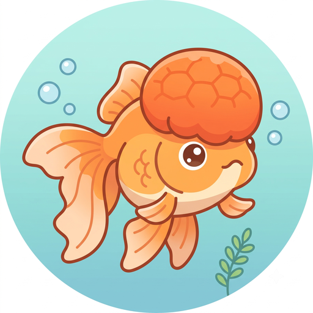

<!doctype html>
<html lang="ja">
<head>
<meta charset="utf-8">
<meta name="viewport" content="width=device-width, initial-scale=1">
<title>TTスーパーズコApp</title>
<style>
  html, body { margin:0; background:#2C7A99; }
  #root { min-height:100vh; }
  .boot { position:fixed; inset:0; display:flex; flex-direction:column; align-items:center; justify-content:center; gap:18px;
    color:#fff; opacity:.85; font-family:"Segoe UI","Hiragino Sans",system-ui,sans-serif; }
  .bootIcon { width:min(60vw,260px); height:min(60vw,260px); border-radius:20%; box-shadow:0 6px 20px rgba(0,0,0,.3); }
  .bootText { font-size:26px; font-weight:800; }
  .bootTextLg { font-size:min(11vw,50px); font-weight:800; text-align:center; line-height:1.35; padding:0 20px; }
  /* 名前選択（スタッフURLで初回のみ） */
  .pkwrap{ max-width:520px; margin:0 auto; padding:34px 18px; color:#fff;
    font-family:"Segoe UI","Hiragino Sans",system-ui,sans-serif; text-align:center; }
  .pktitle{ font-size:30px; font-weight:800; margin-bottom:22px; line-height:1.5; }
  .pkgrid{ display:grid; grid-template-columns:1fr 1fr; gap:12px; }
  .pk{ background:#fff; color:#155e75; border:0; border-radius:14px; padding:22px 10px;
    font-size:24px; font-weight:800; cursor:pointer; box-shadow:0 2px 6px rgba(0,0,0,.15); }
  .pk:active{ transform:scale(.97); }
  .pkbtns{ display:flex; gap:12px; justify-content:center; margin-top:6px; }
  .pkyes,.pkno{ border:0; border-radius:12px; padding:20px 36px; font-size:24px; font-weight:800; cursor:pointer; }
  .pkyes{ background:#16a34a; color:#fff; } .pkno{ background:#e5e7eb; color:#333; }
  .pknote{ margin-top:20px; font-size:12.5px; opacity:.82; line-height:1.7; }
  /* 合言葉（スタッフURLで初回のみ・名前選択より前に出す） */
  .pwinput2{ font-size:26px; text-align:center; padding:16px 14px; border-radius:14px; border:0;
    width:100%; max-width:280px; box-sizing:border-box; margin:0 auto 16px; display:block; }
  .pwgo{ background:#16a34a; color:#fff; border:0; border-radius:12px; padding:18px 40px;
    font-size:22px; font-weight:800; cursor:pointer; }
  .pwgo:active{ transform:scale(.97); }
  .pwgo:disabled{ opacity:.6; }
  .pwerr{ margin-top:16px; font-size:15px; color:#ffd7d7; min-height:1.4em; }
</style>
</head>
<body>
<div id="root"></div>
<script>
(function () {
  // 起ち上げ直後（ホーム画面のアイコンから開いた時＝view指定なし）は、
  // スマホ自身が先に出すアイコン画面(OS側・制御不可)のすぐ後に、アイコンを重ねて出さず
  // 「TTスーパーズコを起動中」の文字だけを最初から表示する（アイコンが二重に見える対策）。
  // ボタンを押した後の画面遷移（?view=... 付き）は元通り「よみこみ中…」の文字付きを最初から表示。
  var view = (new URLSearchParams(location.search)).get('view') || 'home';
  var root = document.getElementById('root');
  if (view === 'home') {
    root.innerHTML = '<div class="boot"><div class="bootTextLg">TTスーパーズコ<br>を起動中</div></div>';
  } else {
    root.innerHTML = '<div class="boot"><div class="bootText">ズコがお散歩中...</div></div>';
  }
})();
</script>

<!-- 判定コア(detect)と、GASと共通の描画関数(renderHome_/renderPage_/personPerms_ など)。
     どちらも純JS。GAS専用の関数(doGet等)は同梱されるが呼ばれないだけ。
     ★?v=... はキャッシュ避け（GitHub PagesがCache-Control: max-age=600を付けるため、
     コード更新のたびにここの番号を上げないとスマホが古いJSを最大10分キャッシュし続ける）。
     更新手順：code.js/detect_core.jsを直したら、この2行の?v=も必ず同じ値へ上げてからpushする。 -->
<!-- ★被り画面の初期表示を最速化：events(被りデータ)と tilesettings(権限)の取得を、重い
     detect_core.js/code.js の読み込みより「前」に発射する（約0.6秒早くスタート）。結果はグローバルに
     貯め、下の本体スクリプトが code 読み込み後に拾って描画/起動する（発射だけなので code 不要）。 -->
<script>
(function () {
  var EXEC = "https://script.google.com/macros/s/AKfycbwEpGPZhvGCbea6qoft-_TRCgvp5t0ieNf5kDCuFs9-1VYJi7r5RPgTPBM7AEBqPPLL4A/exec";
  var view = (new URLSearchParams(location.search)).get('view') || 'home';
  // tilesettings（権限・名前選択に必要＝全画面で使う）
  window.__tsResult = undefined; window.__tsWaiter = null;
  window.__ttTileSettingsPre = function (payload) {
    window.__tsResult = payload || {};
    var w = window.__tsWaiter; window.__tsWaiter = null; if (w) w(window.__tsResult);
  };
  var s0 = document.createElement('script');
  s0.src = EXEC + '?action=tilesettings&callback=__ttTileSettingsPre&cb=' + Date.now();
  s0.onerror = function () { window.__ttTileSettingsPre({}); };
  document.head.appendChild(s0);
  // events（被りデータ・被り画面のときだけ先読み）
  if (view === 'conflict') {
    window.__prefetchedEvents = undefined; window.__prefetchWaiter = null; window.__prefetchStarted = true;
    window.__ttEventsPre = function (payload) {
      window.__prefetchedEvents = payload || null;
      var w = window.__prefetchWaiter; window.__prefetchWaiter = null; if (w) w(window.__prefetchedEvents);
    };
    var sp = document.createElement('script');
    sp.src = EXEC + '?action=events&callback=__ttEventsPre&cb=' + Date.now();
    sp.onerror = function () { window.__ttEventsPre({ error: 'net' }); };
    document.head.appendChild(sp);
  }
  // uriage（売上データ・売上画面のときだけ先読み。被り画面と同じ「最速化3点セット」）
  if (view === 'uriage') {
    window.__prefetchedUriage = undefined; window.__prefetchUriageWaiter = null; window.__prefetchUriageStarted = true;
    window.__ttUriagePre = function (payload) {
      window.__prefetchedUriage = payload || null;
      var w = window.__prefetchUriageWaiter; window.__prefetchUriageWaiter = null; if (w) w(window.__prefetchedUriage);
    };
    var su = document.createElement('script');
    su.src = EXEC + '?action=uriage&callback=__ttUriagePre&cb=' + Date.now();
    su.onerror = function () { window.__ttUriagePre({ error: 'net' }); };
    document.head.appendChild(su);
  }
})();
</script>
<script src="detect_core.js?v=20260716r"></script>
<script src="code.js?v=2026071604y"></script>
<script>
(function () {
  // 施術室被りデータは公開リポジトリに置かず、GASからJSONPで取得する
  // （このページはGASを表示しないので、Googleの「別ユーザー作成」警告バーは出ない）。
  var EXEC = "https://script.google.com/macros/s/AKfycbwEpGPZhvGCbea6qoft-_TRCgvp5t0ieNf5kDCuFs9-1VYJi7r5RPgTPBM7AEBqPPLL4A/exec";

  var params = new URLSearchParams(location.search);
  var view  = params.get('view') || 'home';
  var staff = params.get('staff') === '1';
  // 開発用URL（?dev=1）＝tile_settings.jsonの表示ON/OFF設定を無視して全ボタン表示。staff指定時は無効。
  var dev   = !staff && params.get('dev') === '1';
  var nail  = params.get('nail') === '1';
  var base  = location.pathname;   // メニュー内の遷移は同じページの ?view= を切り替えるだけ

  // ===== 操作者(who)＝この端末で選んだ名前。localStorageに「固定」する。=====
  // 一度選んだら本人は変更不可。変えられるのは開発者だけ＝開発URLに ?reset=1 を付けて解除する。
  var LS_WHO='sz_who', LS_ROLE='sz_role', LS_DEV='sz_device', LS_LABEL='sz_label', LS_PWOK='sz_pw_ok';
  function lsGet(k){ try{ return localStorage.getItem(k)||''; }catch(e){ return ''; } }
  function lsSet(k,v){ try{ localStorage.setItem(k,v); }catch(e){} }
  function lsDel(k){ try{ localStorage.removeItem(k); }catch(e){} }
  // 開発者だけのロック解除（対象端末で開発URL＋?reset=1を開く）。
  if (dev && params.get('reset') === '1') { lsDel(LS_WHO); lsDel(LS_ROLE); lsDel(LS_LABEL); }

  var device = lsGet(LS_DEV);
  if (!device) { device = 'd' + Date.now().toString(36) + Math.random().toString(36).slice(2, 8); lsSet(LS_DEV, device); }
  var who  = staff ? lsGet(LS_WHO) : '';
  var role = staff ? (lsGet(LS_ROLE) || 'スタッフ') : (dev ? '開発' : '社長(幹部)');
  // MOVESCRIPT_ の szIdent_（部屋移動の送信）が拾えるようグローバルへ。localStorageが主・これは補助。
  window.__SZ_WHO_ = who;
  window.__SZ_ROLE_ = role;
  window.__SZ_DEVICE_ = device;

  // ===== ホーム画面インストール可否（PWA化）。幹部用/スタッフ用/開発用の全URLで共通。=====
  // 自動の案内帯は出さない。Android=Chromeの「⋮」メニュー→「アプリをインストール」、
  // iPhone=共有ボタン→「ホーム画面に追加」、どちらも手動のみ。名前とアイコンは3つとも同じ。
  (function () {
    var manifestFile = staff ? 'manifest-staff.json' : (dev ? 'manifest-dev.json' : 'manifest-kanbu.json');
    var head = document.head;

    var manifestLink = document.createElement('link');
    manifestLink.rel = 'manifest';
    manifestLink.href = manifestFile;
    head.appendChild(manifestLink);

    if ('serviceWorker' in navigator) {
      navigator.serviceWorker.register('sw.js').catch(function () {});
    }

    // Chrome自身が出す自動バナーも抑止（手動メニューからのインストールは引き続き可能）。
    window.addEventListener('beforeinstallprompt', function (e) { e.preventDefault(); });

    // ===== iPhone(Safari)対応 =====
    // iOSはmanifest.jsonの内容を見ないので、Apple専用のmeta/linkで同じことを指定する。
    // インストールは常に手動(共有ボタン→「ホーム画面に追加」)のみ・自動バナーはiOSに存在しない。
    var appleCapable = document.createElement('meta');
    appleCapable.name = 'apple-mobile-web-app-capable';
    appleCapable.content = 'yes';
    head.appendChild(appleCapable);

    var appleTitle = document.createElement('meta');
    appleTitle.name = 'apple-mobile-web-app-title';
    appleTitle.content = 'TTズコ';
    head.appendChild(appleTitle);

    var appleStatusBar = document.createElement('meta');
    appleStatusBar.name = 'apple-mobile-web-app-status-bar-style';
    appleStatusBar.content = 'black-translucent';
    head.appendChild(appleStatusBar);

    var appleIcon = document.createElement('link');
    appleIcon.rel = 'apple-touch-icon';
    appleIcon.sizes = '180x180';
    appleIcon.href = 'icons/icon-180.png';
    head.appendChild(appleIcon);
  })();

  function esc(s){ return (typeof esc_==='function') ? esc_(s) : String(s==null?'':s); }

  function runScripts(container) {
    // innerHTMLで挿入した<script>は実行されないので、作り直して実行する
    // （renderPage_ 内の TTSCRIPT_/MOVESCRIPT_ などを効かせるため）。
    var list = container.querySelectorAll('script');
    for (var i = 0; i < list.length; i++) {
      var old = list[i];
      var s = document.createElement('script');
      if (old.src) s.src = old.src; else s.textContent = old.textContent;
      old.parentNode.replaceChild(s, old);
    }
  }

  function mount(html) {
    var root = document.getElementById('root');
    root.innerHTML = html;
    runScripts(root);
    window.scrollTo(0, 0);
  }

  function fail(msg) {
    document.getElementById('root').innerHTML =
      '<div class="boot" style="text-align:center;padding:1.5em;">' + msg + '</div>';
  }

  // ===== アクセスログ（画面表示ごとにGASへ。GASが一旦貯め、事務所PCがDBへ回収）=====
  function logHit(v){
    try {
      var s = document.createElement('script');
      s.src = EXEC + '?action=hit&who=' + encodeURIComponent(who) +
        '&role=' + encodeURIComponent(role) + '&device=' + encodeURIComponent(device) +
        '&view=' + encodeURIComponent(v) + '&cb=' + Date.now();
      s.onerror = function(){ /* ログ失敗は無視（画面は出す） */ };
      document.body.appendChild(s);
    } catch(e){}
  }

  // 部屋移動が完了した予約は、重いevents.json(約194KB)の再生成・再取得を待たずに
  // 「その場で手元のデータから除外して即再描画」する（体感短縮）。動かした event_id をここへためる。
  window.__movedOut = window.__movedOut || {};
  function detectAndMount_(payload) {
    var evs = payload.events;
    try { evs = evs.filter(function (e) { return !window.__movedOut[e.event_id]; }); } catch (ig) {}
    var res = detect(evs, nail, payload.date_from);
    mount(renderPage_(res.conflicts, res.meta, payload, nail, base, staff, dev));
    try { window.scrollTo(0, 0); } catch (e) {}   // 再描画後は一番上へ（部屋移動の完了更新でも同じ）
    try { if (!window.__keepMvOverlay) { var ov = document.getElementById('mvWaitOverlay'); if (ov && ov.parentNode) ov.parentNode.removeChild(ov); } } catch (e) {}  // 全画面オーバーレイを消す（完了画面を"ぴったり1秒"見せる間は__keepMvOverlayで残す）
  }
  function renderConflictPayload_(payload) {
    try {
      if (!payload || payload.error) { fail('データ取得エラー：' + ((payload && payload.error) || '不明')); return; }
      window.__lastConflictPayload = payload;   // 完了時にこの手元データから即再描画するため保持
      detectAndMount_(payload);
    } catch (e) { fail('描画エラー：' + e); }
  }
  function showConflict() {
    // ★初回だけ：起動時に tilesettings と並行して先読みした被りデータを使う。
    //   従来は tilesettings の往復(約2.7秒)を待ってから events を投げる直列で、
    //   被りが出るまで約5.5秒かかっていた。先読みで直列を解消＝待ち時間ほぼ半分。
    //   使い切り(__prefetchStarted を false に)なので、部屋移動後などのリフレッシュは
    //   下の通常取得を通り、必ず新鮮なデータになる。
    if (window.__prefetchStarted) {
      window.__prefetchStarted = false;
      var pe = window.__prefetchedEvents;
      if (pe !== undefined) {
        if (pe && !pe.error) { renderConflictPayload_(pe); return; }
        // 先読みが失敗/エラー → 下の通常取得にフォールバック
      } else {
        // まだ来ていない → 着信時に描画（エラーなら通常取得へリトライ）
        window.__prefetchWaiter = function (p) {
          if (p && !p.error) { renderConflictPayload_(p); } else { showConflict(); }
        };
        return;
      }
    }
    // 通常（部屋移動後のリフレッシュ等）＝新鮮なデータを取り直す
    window.__ttEvents = function (payload) { renderConflictPayload_(payload); };
    var s = document.createElement('script');
    s.src = EXEC + '?action=events&callback=__ttEvents&cb=' + Date.now();
    s.onerror = function () { fail('データに接続できませんでした。通信環境をご確認ください。'); };
    document.body.appendChild(s);
  }
  // 部屋移動の完了後、ページをリロード（真っ白なリロード画面）せずに検出画面を直接再描画するため公開。
  window.__refreshConflictView = showConflict;
  // ★完了時の即時描画：サーバー再取得をせず、直近に取得済みのpayloadから __movedOut を除外して
  //   描画する（events.json再生成待ちの数秒をまるごと省く）。手元データが無い時だけ従来の再取得へ。
  window.__renderConflictFromCache = function () {
    var p = window.__lastConflictPayload;
    if (!p) { showConflict(); return; }
    try { detectAndMount_(p); } catch (e) { showConflict(); }
  };

  function showLt() {
    window.__ttLt = function (payload) {
      try {
        if (!payload || payload.error) { fail('データ取得エラー：' + ((payload && payload.error) || '不明')); return; }
        mount(renderLtPage_(payload, base, staff, dev));
      } catch (e) { fail('描画エラー：' + e); }
    };
    var s = document.createElement('script');
    s.src = EXEC + '?action=lt&callback=__ttLt&cb=' + Date.now();
    s.onerror = function () { fail('データに接続できませんでした。通信環境をご確認ください。'); };
    document.body.appendChild(s);
  }

  function renderUriagePayload_(payload) {
    try {
      if (!payload || payload.error) { mount(renderUriageError_((payload && payload.error) || '不明', base, staff, dev)); return; }
      mount(renderUriagePage_(payload, base, staff, dev));
    } catch (e) { fail('描画エラー：' + e); }
  }
  function showUriage() {
    // ★初回だけ：起動時にtilesettingsと並行して先読みした売上データを使う（被り画面と同じ方式）。
    //   使い切り(__prefetchUriageStartedをfalseに)なので、転記後の手動更新は必ず新鮮なデータを取り直す。
    if (window.__prefetchUriageStarted) {
      window.__prefetchUriageStarted = false;
      var pu = window.__prefetchedUriage;
      if (pu !== undefined) {
        if (pu && !pu.error) { renderUriagePayload_(pu); return; }
        // 先読みが失敗/エラー → 下の通常取得にフォールバック
      } else {
        window.__prefetchUriageWaiter = function (p) {
          if (p && !p.error) { renderUriagePayload_(p); } else { showUriage(); }
        };
        return;
      }
    }
    // 通常（▶更新ボタン等）＝新鮮なデータを取り直す
    window.__ttUriage = function (payload) { renderUriagePayload_(payload); };
    var s = document.createElement('script');
    s.src = EXEC + '?action=uriage&callback=__ttUriage&cb=' + Date.now();
    s.onerror = function () { fail('データに接続できませんでした。通信環境をご確認ください。'); };
    document.body.appendChild(s);
  }
  window.__refreshUriageView = showUriage;

  function showUnanswered() {
    window.__ttUnanswered = function (payload) {
      try {
        if (!payload || payload.error) { mount(renderUnansweredError_((payload && payload.error) || '不明', base, staff, dev)); return; }
        mount(renderUnansweredPage_(payload, base, staff, dev));
      } catch (e) { fail('描画エラー：' + e); }
    };
    var s = document.createElement('script');
    s.src = EXEC + '?action=unanswered&callback=__ttUnanswered&cb=' + Date.now();
    s.onerror = function () { fail('データに接続できませんでした。通信環境をご確認ください。'); };
    document.body.appendChild(s);
  }

  function showAkijikan() {
    window.__ttAkijikan = function (payload) {
      try {
        if (!payload || payload.error) { mount(renderAkijikanError_((payload && payload.error) || '不明', base, staff, dev)); return; }
        mount(renderAkijikanPage_(payload, base, staff, dev));
      } catch (e) { fail('描画エラー：' + e); }
    };
    var s = document.createElement('script');
    s.src = EXEC + '?action=akijikan&callback=__ttAkijikan&cb=' + Date.now();
    s.onerror = function () { fail('データに接続できませんでした。通信環境をご確認ください。'); };
    document.body.appendChild(s);
  }

  // 自動監視（開発URL ?dev=1 だけに出るボタン）。事務所PCが1分ごとに送ってくる状態を見る。
  // ★描画・自動更新・操作は全て code.js の renderKanshiPage_ が埋め込むスクリプトが行う
  //   （①GAS版と同じ1本＝二重管理しない）。ここは取得して渡すだけ。
  function showKanshi() {
    window.__ttKanshi = function (payload) {
      try {
        if (!payload || payload.error) { mount(renderKanshiError_((payload && payload.error) || '不明', base, staff, dev)); return; }
        mount(renderKanshiPage_(payload, base, staff, dev));
      } catch (e) { fail('描画エラー：' + e); }
    };
    var s = document.createElement('script');
    s.src = EXEC + '?action=kanshi&callback=__ttKanshi&cb=' + Date.now();
    s.onerror = function () { fail('データに接続できませんでした。通信環境をご確認ください。'); };
    document.body.appendChild(s);
  }

  // ホーム：権限(perms)＋選んだ名前(who)で出し分け（renderHomePage_は code.js＝GASと同一）。
  function showHome(perms, order) {
    mount(renderHomePage_({ perms: perms || (typeof defaultPerms_==='function' ? defaultPerms_() : null),
                            order: order }, base, staff, dev, who));
  }

  // ===== 名前選択画面（スタッフURLで未選択のときだけ）=====
  // ★一度誰かが選んだ名前は他端末からは選べない（2026-07-16・重複選択防止）。ここでの除外は
  //   見た目の親切だけ＝本当の防止はconfirmPickのaction=claim(サーバー側の早い者勝ちロック)。
  function showPicker(people, labels, claimed) {
    var root = document.getElementById('root');
    var pick = (people || []).filter(function (p) { return p !== 'kanbu' && !(claimed && claimed[p]); });
    var btns = pick.map(function (pid) {
      return '<button type="button" class="pk" data-who="' + esc(pid) + '">' + esc(labels[pid] || pid) + '</button>';
    }).join('');
    root.innerHTML = '<div class="pkwrap"><div class="pktitle">あなたは誰ですか？</div>' +
      '<div class="pkgrid">' + btns + '</div>' +
      '<div class="pknote">すでに他の人が選んだ名前は出ません。自分の名前が無い時は、事務所の自動監視システムから新しく作ってもらってください。</div></div>';
    var bs = root.querySelectorAll('.pk');
    for (var i = 0; i < bs.length; i++) {
      bs[i].addEventListener('click', function () {
        confirmPick(this.getAttribute('data-who'), this.textContent);
      });
    }
  }
  function confirmPick(pid, label) {
    var root = document.getElementById('root');
    root.innerHTML = '<div class="pkwrap"><div class="pktitle">あなたは「' + esc(label) + '」で<br>正しいですか？</div>' +
      '<div class="pkbtns"><button type="button" class="pkno">ちがう</button>' +
      '<button type="button" class="pkyes">はい</button></div></div>';
    root.querySelector('.pkyes').addEventListener('click', function () {
      var yesBtn = this; yesBtn.disabled = true;
      // 早い者勝ちの確保をGASへ依頼。通ってから初めて端末に記憶する（他端末と同時に選んだ時の安全弁）。
      window.__ttClaim = function (r) {
        if (r && r.ok) {
          lsSet(LS_WHO, pid); lsSet(LS_ROLE, 'スタッフ'); lsSet(LS_LABEL, label);
          lsSet('sz_picked_at', String(Date.now()));   // リセット合図との比較用（選んだ時刻）
          location.reload();   // 記憶して読み直し→通常フローへ
        } else {
          root.innerHTML = '<div class="pkwrap"><div class="pktitle">' +
            esc((r && r.error) || 'すでに他の人が選んでいます') + '</div>' +
            '<div class="pknote">画面を読み直して、もう一度選んでください。</div></div>';
          setTimeout(function () { location.reload(); }, 1800);
        }
      };
      var s = document.createElement('script');
      s.src = EXEC + '?action=claim&pid=' + encodeURIComponent(pid) + '&device=' + encodeURIComponent(device) +
        '&label=' + encodeURIComponent(label) + '&callback=__ttClaim&cb=' + Date.now();
      s.onerror = function () {
        root.innerHTML = '<div class="pkwrap"><div class="pktitle">通信エラーです</div>' +
          '<div class="pknote">画面を読み直して、もう一度選んでください。</div></div>';
        setTimeout(function () { location.reload(); }, 1800);
      };
      document.body.appendChild(s);
    });
    root.querySelector('.pkno').addEventListener('click', function () { location.reload(); });
  }

  // ===== 合言葉（スタッフURLのみ・名前選択より前に出す）=====
  // ★あくまで「知らない人が適当に開けない」程度の鍵。正解の合言葉自体はここには置かず、
  //   GAS(action=checkpw)へ問い合わせてok:true/falseだけ受け取る。合言葉は自動監視メニュー4
  //   （tile_settings.py）から事務所PCが変更できる。一度通れば端末に記憶し、次回以降は聞かない
  //   （名前選択のリセット合図とは別物＝合言葉を変えても既存端末の記憶は自動では消えない）。
  function showPwGate(cfg) {
    var root = document.getElementById('root');
    root.innerHTML = '<div class="pkwrap"><div class="pktitle">合言葉を<br>入力してください</div>' +
      '<input type="text" id="pwIn" class="pwinput2" autocomplete="off" autocapitalize="off">' +
      '<button type="button" class="pwgo" id="pwGoBtn">すすむ</button>' +
      '<div class="pwerr" id="pwErr"></div></div>';
    var input = root.querySelector('#pwIn');
    var btn = root.querySelector('#pwGoBtn');
    var err = root.querySelector('#pwErr');
    function submit() {
      var v = input.value;
      if (!v) return;
      btn.disabled = true; err.textContent = '';
      window.__ttCheckPw = function (r) {
        btn.disabled = false;
        if (r && r.ok) { lsSet(LS_PWOK, '1'); boot(cfg); }
        else { err.textContent = (r && r.error) || '合言葉が違います。もう一度お試しください。'; input.value=''; input.focus(); }
      };
      var s = document.createElement('script');
      s.src = EXEC + '?action=checkpw&pw=' + encodeURIComponent(v) + '&callback=__ttCheckPw&cb=' + Date.now();
      s.onerror = function () { btn.disabled = false; err.textContent = '通信エラーです。もう一度お試しください。'; };
      document.body.appendChild(s);
    }
    btn.addEventListener('click', submit);
    input.addEventListener('keydown', function (e) { if (e.key === 'Enter') submit(); });
    input.focus();
  }

  // ===== 起動：タイル設定/権限を取得 → 名前選択 or 画面表示 =====
  function boot(cfg) {
    var people = (cfg && cfg.people) || ['kanbu','ringo','mikan','olive','marron','mango','coconut','reception'];
    var labels = (cfg && cfg.labels) || {};
    var perms  = (cfg && cfg.perms) || null;
    var order  = (cfg && cfg.order) || null;   // ボタンの並び順（自動監視メニュー4で変更可）

    // 端末リセットの合図：この端末が名前を選んだ時刻より後にリセット指示があれば、記憶を消して選び直し。
    // （PCの自動監視メニュー4で「この人を選び直し／全員を選び直し」を押すと合図が立つ。次回起動で効く）
    if (staff && who) {
      var resets = (cfg && cfg.resets) || {};
      var pickedAt = parseInt(lsGet('sz_picked_at') || '0', 10) || 0;
      var need = Math.max(parseInt(resets.all || 0, 10) || 0, parseInt(resets[who] || 0, 10) || 0);
      if (need > pickedAt) {
        lsDel(LS_WHO); lsDel(LS_ROLE); lsDel(LS_LABEL); lsDel('sz_picked_at');
        who = ''; window.__SZ_WHO_ = '';
      }
    }
    // スタッフURLで名前が未選択なら、まず名前を選ばせる（選ぶまで他は出さない）。
    if (staff && !who) { showPicker(people, labels, (cfg && cfg.claimed) || {}); return; }

    // 権限判定は code.js の関数を再利用＝GAS(①)と完全一致。
    var allow = (typeof personPerms_ === 'function')
      ? personPerms_(perms || (typeof defaultPerms_==='function'?defaultPerms_():{}), staff, dev, who) : null;
    var v = view;
    if (typeof viewAllowed_ === 'function' && !viewAllowed_(v, allow)) v = 'home';

    logHit(v);
    if (v === 'lt') showLt();
    else if (v === 'uriage') showUriage();
    else if (v === 'unanswered') showUnanswered();
    else if (v === 'akijikan') showAkijikan();
    else if (v === 'kanshi') showKanshi();
    else if (v === 'conflict') showConflict();
    else showHome(perms, order);
  }

  // ★events(被りデータ)/tilesettings(権限) はページ冒頭の早期スクリプトで既に発射済み
  //   （重い code.js の読み込みを待たずに約0.6秒早くスタート）。ここでは先読み結果を消費するだけ：
  //   tilesettings が届いていれば即 boot、まだなら届き次第 boot する。events は showConflict が
  //   __prefetchedEvents を使い切りで拾う（初回のみ／部屋移動後などのリフレッシュは新規取得で新鮮）。
  function bootOrGate(cfg) {
    if (staff && !lsGet(LS_PWOK)) { showPwGate(cfg); } else { boot(cfg); }
  }
  if (window.__tsResult !== undefined) { bootOrGate(window.__tsResult); }
  else { window.__tsWaiter = function (cfg) { bootOrGate(cfg || {}); }; }
})();
</script>
</body>
</html>
